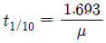
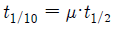
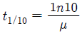
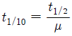
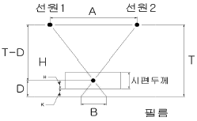
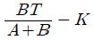
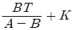
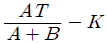
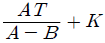
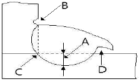

방사선비파괴검사기사(구) (2013-09-28 기출문제)
1과목: 방사선투과시험원리
1. 초기 방사선 강도의 1/10이 되는 수준의 두께를 1/10가 층이라 한다. 이것을 식으로 표시할 때 옳은 것은? (단, μ: 선형 흡수계수, t1/2: 반가층이다.)




(정답률: 알수없음)

2. 일차방사선이 시험체의 얇은 부분을 통하여 필름홀더나 카세트에 부딪쳐 상의 경계부분 바로 안쪽에서 현저하게 나타나는 산란방사선의 영향을 무엇이라 하는가?
- 그늘(Shadow)
- 언터컷(Undercut)
- 기하학적 불선명도
- 콘트라스트(Contrast)
(정답률: 알수없음)
3. 어떤 흡수체의 투과전의 강도를 I0, 투과 후의 강도를 I라 할 때에 I0/I = 2n로 나타낼 수있다. 여기서 n은 무엇을 나타내는가?
- 붕괴수
- 붕괴상수
- 선흡수계수
- 반감기수
(정답률: 알수없음)
4. 다음 중 X선 투과사진 촬영시에 식별도가 좋은 사진을 찍으려면 어느 방법이 가장 좋은가?
- 관전압을 낮게 하고 노출시간을 길게 한다.
- 관전압을 높게 하고 노출시간을 짧게 한다.
- 관전압을 크게 하고 노출시간을 짧게 한다.
- 관전압과 관전류를 증가시킨다.
(정답률: 알수없음)
5. 다음 중 기하학적 불선명도가 지나치게 큰 경우는?
- 선원-피사체간 또는 피사체-필름간의 거리가 큼
- 후방산란이 과도함
- 필름의 입도가 적음
- 피사체가 놓인 방향이 수직임
(정답률: 알수없음)
6. 방산선투과검사에서 다음 중 반드시 필요한 것이 아닌 것은?
- X선 발생장치
- 투과도계
- 촬영용 필름
- 탐촉자
(정답률: 알수없음)
7. 두꺼운 철판 내부의 결함 측정에 적합한 비파괴검사법의 조합으로 옳은 것은?
- 방사선투과시험, 자분탐상시험
- 초음파탐상시험, 침투탐상시험
- 초음파탐상시험, 와전류탐상시험
- 방사선투과시험, 초음파탐상시험
(정답률: 알수없음)
8. 도체에 교류가 흐르면 도체주위에서 발생되는 현상은?
- 도체주위에 주기적으로 변하는 전압이 생긴다.
- 도체주위에 음력장이 생긴다.
- 도체주위에 직류자장이 생긴다.
- 도체주위에 교류자장이 생긴다.
(정답률: 알수없음)
9. 와전류탐상시험의 장점에 대한 설명으로 옳은 것은?
- 부도체 금속에 적용이 용이하다.
- 시험속도가 빠르며 자동화가 가능하다.
- 결함의 종류 판별 및 내부결함검사가 용이하다.
- 복잡한 형상을 갖는 시험체의 전면 탐상에 유리하다.
(정답률: 알수없음)
10. 할로겐 누설검사에서 검출기의 감도는 시험전, 시험후, 연속하여 사용할 경우에 몇 시간마다 교정하여야 하는가?
- 1시간
- 2시간
- 3시간
- 4시간
(정답률: 알수없음)
11. 다음 비파괴검사에 대한 설명 중 옳은 것은?
- 단조품의 내부결함 검출에 최적인 것은 누설검사이다.
- 강판의 라미네이션 검출에 가장 적당한 것은 초음파탐상검사이다.
- 주조품의 내부결함 검출에 가장 좋은 검사법은 와류탐상검사이다.
- 맞대기 용접부의 내부결함 검출에 가장 효과적인 검사법은 침투탐상검사이다.
(정답률: 알수없음)
12. 용제제거성 형광침투탐상시험법에 대한 설명으로 틀린 것은?
- 침투시간이 짧다.
- 수도시설이 필요하지 않다.
- 시험체를 재검사할 수 없다.
- 큰 기계 부품이나 구조물의 부분탐상에 적합하다.
(정답률: 알수없음)
13. 침투탐상검사가 효과적이지 않는 검사체는?
- 공구강
- 알루미늄
- 콘크리트
- 마그네슘
(정답률: 알수없음)
14. 감마선(γ선)투과검사에 대한 설명으로 옳은 것은?
- 외부의 전원이 필요하다.
- 열려있는 작은 결함에도 사용할 수있다.
- 360°또는 일정 방향으로 투사의조절이 불가능하다.
- 투과능력은 사용하는 동위원소가 달라도 모두 같다.
(정답률: 알수없음)
15. 와류탐상검사를 적용할 때 다음 중 시험코일의 감도가 가장 높은 것은?
- 외경 0.4cm 구리 전선과 내경 1cm코일
- 외경 1cm 구리 봉과 내경 2cm코일
- 외경 2cm 알루미늄 봉과 내경 3cm코일
- 내경 4cm 구리 관과 외경 3cm코일
(정답률: 알수없음)
16. 비파괴검사에서 결함의 검출확률에 영향을 미치는 요인과 관계가 먼 것은?
- 시험환경
- 결함의 개수
- 시험체의 기하학적 특징
- 결함의 방향
(정답률: 알수없음)
17. 다음 중 비파괴검사법과 원리의 연결이 틀린 것은?
- 방사선투과시험-결함에 의한 투과강도의 차이
- 초음파탐상시험-결함에 의한 반사에코
- 자분탐상시험-결함에 의한 누설자속
- 침투탐상시험-결함에 의한 표피효과
(정답률: 알수없음)
18. 자분탐상검사의 신뢰도를 향상시킬 수 있는 방법이 아닌 것은?
- 교육과 훈련을 통하여 시험자의 기량을 향상시킨다.
- 검사에 적합한 규격을 선정하여 바르게 적용한다.
- 결함의 검출감도를 높이기 위하여 가급적 높은 전류로 검사한다.
- 생산공정, 예상되는 결함의 종류 등에 따라 검사에 적합한 자화방법을 선정한다.
(정답률: 알수없음)
19. 1[atm]에 대한 단위의 환산이 틀린 것은?
- 7.6torr
- 14.7psi
- 101.3kPa
- 760mmHg
(정답률: 알수없음)
20. 음향방출검사와 초음파탐상검사에 대한 설명중 틀린 것은?
- 음향방출검사는 재료 내부의 동적 거동을 파악하고 결함의 성질과 상태를 평가하는 동적인 결함 검출기법이다.
- 음향방출검사는 재료 내부에서 탄성파가 발생하였을 때만 음향방출검사신호를 포착하는 수동적인 비파괴계측기법이다.
- 초음파탐상검사는 초음파 신호를 직접 입사한 후 결함으로부터 반사해 온 신호를 검출하는 능동적인 비파괴계측기법이다.
- 초음파탐상검사는 이미 내부에 존재하고 있는 결함을 검출하는 정적인 결함 검출 기법으로 음향방출검사보다 낮은 100KHz이하의 초음파를 수신, 해석하는 것이 일반적이다.
(정답률: 알수없음)
2과목: 방사선투과검사
21. 주강품에 발생하는 결함 중 주형내에서 용탕의 2개 흐름이 합률하였으나 그 경계가 완전히 용입되지 못한, 즉 금속학적으로 접합되지 못한 것을 무엇이라 하는가?
- 수축관
- 미스런
- 콜드셧
- 균열
(정답률: 알수없음)
22. 핵연료봉과 같이 높은 방사성물질의 방사선투과검사방법은?
- 중성자투과검사의 직접노출법
- 중성자투과검사의 전사법
- 전자 방사선투과검사의 투과법
- 전자 방사선투과검사의 전자방출법
(정답률: 알수없음)
23. 방사선투과사진의 상질 및 식별도에 관한 설명으로 옳은 것은?
- 방사선투과사진의 감도는 피사체콘트라스트와 필름콘트라스트에 영향을 받지 않는다.
- 방사선투과사진 콘트라스트는 투과사진의 두 영역사이의 농도차를 말한다.
- 피사체콘트라스트는 시험체의 두부분을 투과한 방사선의 강도비이며, 노출시간, 전류 또는 선원의 강도, 거리에 영향을 받는다.
- 필름콘트라스트는 필름특성곡선의 기울기를 말하고, 필름의 종류, 현상도 및 농도, 사용된 스크린의 종류에는 영향을 받지 않는다.
(정답률: 알수없음)
24. 필름 저장통은 보통 목재를 사용하는데 그 내면에는 연판을 붙였다. 이 연판을 붙인 가장 큰 이유는?
- 암실을 만들기 위한 것이다.
- X선이나 γ선을 차단하기 위한 것이다.
- 습기가 차지 않도록 하는 것이다.
- 광전효과를 없애기 위한 것이다.
(정답률: 알수없음)
25. 텅스텐을 표적으로 하는 X선관에서 관전압을 변경하는 경우 발생한는X선의 파장과 강도의 관계에서 관전류를 일정하게 하고 관전압만 상승시킬 때 일어나느 현상의 설명으로 틀린것은?
- X선의 선질이 변한다.
- X선의 강도는 커진다.
- 최고 강도는 짧은 쪽으로 이동한다.
- 최단파장은 긴 쪽으로 이동한다.
(정답률: 알수없음)
26. 방사선투과검사시 시험체의 투과방향으로 산란되는 것을 무엇이라 하는가?
- 전방산란
- 측면산란
- 후방산란
- 외각산란
(정답률: 알수없음)
27. 수동법에 의한 현상으로 필름표면에 망상형 주름이 발생하였다. 차후 이러한 현상을 방지하기 위한 방법은?
- 현상처리과정에서 온도를 일정하게 유지한다.
- 나일론으로 된 장갑을 끼고 필름을 취급한다.
- 필름걸개를 탱크상단부에 탁탁 쳐주거나 교반하여 준다.
- 현상처리 전에 정착액이나 정지액이 필름에 묻지 않도록 주의한다.
(정답률: 알수없음)
28. 베타트론 가속장치에서 전자를 가속시키는 방법은?
- 자장의 방출에 의해서
- 자장영역을 AC 자속으로 변화시켜서
- 고주파수의 전자파로서
- 자속을 가속시켜서
(정답률: 알수없음)
29. 정적 및 동적 현상의 방사선의 투과상을 필름 등의 투과사진을 만들지 않고 바로 눈이나 TV모니터로 관찰하는 방사선 투과시험법은?
- 중성자 래디오그래피
- 엘렉트론 래디오그래피
- 실시간 래디오그래피
- 제로 래디오그래피
(정답률: 알수없음)
30. 방사선투과검사시 투과사진의 상질을 높이기 위해 저에너지 방사선을 흡수, 제거시킬 목적으로 필터를 사용하기도 한다. 일반적으로 사용되는 필터의 재질은?
- 재질선택에는 아무제약이 없다.
- 구리 또는 황동
- 텅스텐
- 카드뮴
(정답률: 알수없음)
31. 다음 중 X선 발생장치들의 용도 설명이 틀린 것은?
- X선 응력장치는 응력의 계측에 쓰인다.
- X선 회절장치는 결함의 투시에 쓰인다.
- X선 투과시험장치는 투과 촬영에 쓰인다.
- 형광 X선 분석장치는 물리분석에 쓰인다.
(정답률: 알수없음)
32. 공업용 방사선투과검사에 주로 사용하는 스크린(증감지)이 아닌 것은?
- 연박스크린
- 산화납스크린
- 질화납스크린
- 형광스크린
(정답률: 알수없음)
33. 일반적으로 사용되는 선원조사 장치에서 방사성동위원소선원은 피그테일의 앞쪽에 위치하며, 이 피그테일을 이동와이어에 연결하도록 되어있다. 방사성동위원소 선원을 검사체 주변의 목표지점까지 이동할 수 있도록 해주는 장치명은?
- 차폐체
- S형 튜브
- 콜리메터
- 가이드 튜브
(정답률: 알수없음)
34. 형광증감지의 형광체가 X선 조사로 형광을 방출하는 주된원리는?
- 여기작용
- 흡수작용
- 분자의 분해
- Cerenkov 복사
(정답률: 알수없음)
35. 현상처리된 필름을 보관할 때 고려할 내용으로 틀린 것은?
- 화학증기가 존재하는 곳은 피하여야 한다.
- 실온의 장소로 가시광선을 직접받는곳에 보관하여야 한다.
- 온도와 습도가 자주 변하는 장소에 보관하는 것은 피하여야 한다.
- 필름사이는 간지를 끼워 보관하는 것이 좋다.
(정답률: 알수없음)
36. 초점과 필름간의 거리가 40cm, 5mA에 4분의 노출시간으로 양질의 사진을 얻었다. 거리 60cm, 3mA로 했을 경우의 노출시간은 얼마인가? (단, 다른조건은 동일하다.)
- 5분
- 10분
- 15분
- 20분
(정답률: 알수없음)
37. 방사선투과시험의 자동현상에 대한 설명으로 틀린 것은?
- 수동현상에 비해 짧은 시간내에 현상처리된 방사선투과사진을 얻을 수 있다.
- 탱크는 1000매 처리 또는 1개월의 기간에 라 현상약품을 교환해 주어야 한다.
- 수도현상에서보다 높은 온도를 사용한다.
- 현상액 및 정착액에 경화제를 사용한다.
(정답률: 알수없음)
38. 그림과 같이 파라렉스법에 의해서 투영에 의한 결함위치H를 구하는 공식은?





(정답률: 알수없음)
39. X선발생장치의 유리관속을 진공으로 하는 이유의 설명으로 틀린 것은?
- 불필요한 파장의 X선을 방지하기 위하여
- 필라멘트의 산화를 방지하기 위하여
- 필라멘트의 연소를 방지하기 위하여
- 고속전자의 에너지 손실을 방지하기 위하여
(정답률: 알수없음)
40. 결함의 직경에 따라 방사선투과사진 콘트라스트가 변하여 검고 스무스하며, 둥근 모양의 점으로 나타나는 결함은?
- 가스기공
- 수축관
- 편석
- 코어변이
(정답률: 알수없음)
3과목: 방사선안전관리,관련규격및컴퓨터활용
41. ASME Sec.Ⅷ에 따라 허용 덧붙임을 제외한 용접부의 두께가 30mm인 압력용기를 부분방사선투과사진으로 촬영하였다. 다음지시중 합격인 것은?
- 길이가 18mm인 슬래그 개재물
- 길이 9mm의 균열을 나타내는 지시
- 길이 12mm의 융합불량을 나타내는 지시
- 길이 10mm의 용입부족을 나타내는 지시
(정답률: 알수없음)
42. 스테인리스강 용접부의 방사선투과 시험방법 및 투과사진의 등급분류방법(KS D 0237)에 따라 스테인리스강 용접부의 방사선 투과사진 결함평가시 텅스텐 개재물에 대한 설명중 옳은 것은?
- 제2종의 결함으로 결함의 길이는 결함의 긴지름에 계수2를 곱한값으로 한다.
- 결함의 긴지름이 모재 두께의 1/3을 초과하였을 때에는 4급으로 한다.
- 시험시야에 2개이상 존재할 경우에는 긴지름에 따라 구한 점수 총합의 1/2을 결함점수로 한다.
- 모재의 두께가 20mm인 경우에 시험시야의 크기는 10 x 20mm로 한다.
(정답률: 알수없음)
43. 보일러 및 압력용기에 대한 방사선투과검사(ASME Sec.V.Art.2)에서 450kv이하의 X선 발생장치의 초점크기를 측정하는 방법은?
- 투과법
- 단벽촬영법
- 핀홀법
- 이중벽촬영법
(정답률: 알수없음)
44. 주강품의 방사선투과 시험방법(KS D 0227)에서 투과사진의 결함이 기포인 경우 6류로 판정되어야 하는 것은?
- 10.0mm
- 11.3mm
- 12.0mm
- 16.0mm
(정답률: 알수없음)
45. ASME규격에 사용되는 유공형 투과도계의 최저 두께는?
- 0.0⑤인치(0.13mm)
- 0.010인치(0.25mm)
- 0.015인치(0.38mm)
- 0.020인치(0.51mm)
(정답률: 알수없음)
46. 강용접 이음부의 방사선투과 시험방법(KS B 0845)에 의한 흠의 분류에서 길이를 구하지 않는 것은?
- 용입불량
- 융합불량
- 갈라짐
- 파이프
(정답률: 알수없음)
47. 보일러 및 압력용기에 대한 방사선투과검사(ASME Sec.V.Art.2)에 따라 28mm(1.1인치) 두께의 시험체를 촬영시 필름측에 부착할 유공형 투과도계의 식별번호는?
- 10
- 20
- 25
- 30
(정답률: 알수없음)
48. 원자력법에서 정의 하는 조사선량이라 함은 X선 또는 감마선에 의하여 공기 단위질량당 생성된 전하량을 말한다. 이때 사용되는 단위는?
- 줄(J)
- 뢴트겐(R)
- 시버트(Sv)
- 그레이(Gy)
(정답률: 알수없음)
49. 보일러 및 압력용기에 대한 방사선투과검사(ASME Sec.V.Art.2)에 관한 설명으로 옳지 않은 것은?
- 후방산란선 유무를 확인하기 위한 납글자“B”의 최소 크기는 높이가 1/2인치, 두께 1/16인치이다.
- 농도계의 교정은 스텝웨지 필름을 사용하여 최소한 120일마다 수행한다.
- 접근이 불가능하여 투과도계를 선원 쪽에 놓을 수 없는 경우에는 필름쪽에 놓고, 납글자“F”를 투과도계에 근접시켜 놓아야 한다.
- 투과사진의 어두운 배경 위에 후방산란 확인용 “B”의 밝은 상이 나타나면 그 투과사진의상질은 불합격이다.
(정답률: 알수없음)
50. 다음 중 조직에 흡수되는 방사선량에 해당되는 단위는?
- RBE
- rad
- R
- Sv(또는 rem)
(정답률: 알수없음)
51. 방사선구역 수시출입자의 연간등가선량한도가 옳은 것은?
- 손:500mSv
- 피부:250mSv
- 발:250mSv
- 수정체:15mSv
(정답률: 알수없음)
52. 알루미늄 평판 접합 용접부의 방사선투과 시험방법(KS D0242)에서 구리의 혼입이 존재할 때 분류는?
- 1종류
- 2종류
- 3종류
- 4종류
(정답률: 알수없음)
53. 방사선 안전관리 등의 기술기준에 관한 규칙에서 규정하고 있는 운반물 또는 덧포장의 최대방사선량률의 제한값으로 틀린 것은?
- 전용운반인 경우 외부표면에서 시간당 10mSv
- 전용운반이 아닌 경우 외부표면에서 시간당 2mSv
- 전용운반인 경우 외부표면으로부터 1m 떨어진 지점에서 시간당 1mSv
- 전용운반이 아닌 경우 외부표면으로부터 1m 떨어진 지점에서 시간당 0.1mSv
(정답률: 알수없음)
54. 어떤 방사선 구역에서 비파괴시험을 하고자 한다. 이지역의 방사선량률이 40mR/h일 때 1일 작업시간은 얼마 이내가 가장 적절한가? (단, 1일 허용선량은 20mR)
- 30분
- 2시간
- 2시간 30분
- 4시간
(정답률: 알수없음)
55. Ir-192의 방사능을 측정해보니 3Ci이었다. 10개월전 이 선원의 방사능은 약 얼마인가?
- 8 Ci
- 16Ci
- 32Ci
- 48Ci
(정답률: 알수없음)
56. 법령에서 규정한 피폭선량에서 과다피폭시 일반적으로 일차적인 검사방법으로 무엇을 검사하는가?
- 적혈구
- 혈소판
- 혈압
- 백혈구
(정답률: 알수없음)
57. 야외에서 1회에 5분씩 6회의 노출을 주어 6장의 방사선투과사진을 촬영하였다. 선량율이 10mR/h인 지역에서 촬영이 끝날 때까지 서 있었다면 피폭선량은 얼마나 되는가?
- 0.⑤mSv
- 0.10mSv
- 0.15mSv
- 0.300
(정답률: 알수없음)
58. 방사선발생장치의 사용에 관한 기술 기준의 설명으로 틀린것은?
- 사용시설 안에서만 사용해야 한다.
- 방사선발생장치의 조사 반대 방향은 선량이 적게 나오므로 차폐벽이나 차폐물에 의하여 방사선을 차폐하지 않아도 된다.
- 사용시설 또는 방사선 관리 구역의 눈에 띄기 쉬운 장소에 방사선 장해 방지에 필요한 주의사항을 게시해야 한다.
- 원격조작장치를 사용하여 방사선 발생장치와 인체 사이에 적당한 거리를 두게 한다.
(정답률: 알수없음)
59. 원자력법에서 정한 방사선 작업종사자의 유효선량한도로 옳은 것은?
- 연간 30mSv를 넘지 않는 범위에서 5년간 100mSv
- 연간 50mSv를 넘지 않는 범위에서 5년간 100mSv
- 연간 100mSv를 넘지 않는 범위에서 5년간 300mSv
- 연간 100mSv를 넘지 않는 범위에서 5년간 400mSv
(정답률: 알수없음)
60. 알루미늄관의 원둘레 용접부의 방사선투과 시험방법(KS D 0243)에 의하여 실측이 곤란한 용접부의 두가지 관 두께일 경우 어떻게 검사해야 하는가?
- 두꺼운 쪽 두께
- 얇은 쪽 두께
- 두가지 합의 1/2두께
- 촬영불가
(정답률: 알수없음)
4과목: 금속재료학
61. 다음 중 황동에 포함되지 않는 것은?
- 카트리지 황동
- 문즈메탈
- 네이벌 황동
- Cupronickel
(정답률: 알수없음)
62. 황동의 조직에 관한 설명 중 틀린 것은?
- 황동은 6개의 상을 가지고 있다.
- β상은 조밀육방격자를 갖는다.
- α상은 면심입방격자를 갖는다.
- α상은 구리에 아연을 고용한 상이다.
(정답률: 알수없음)
63. 반도체 기판으로 사용되며 단결정, 다결정, 비정질의 3종으로 사용되는 금속은?
- W
- Si
- Ni
- Cr
(정답률: 알수없음)
64. 제품을 가열하여 그 표면에 알루미늄 금속을 피복시키는 동시에 확산에 의하여 합금피복층을 얻는 표면경화법은?
- 세라다이징
- 카보나이징
- 크로마이징
- 칼로라이징
(정답률: 알수없음)
65. Y합금에 대한 설명 중 틀린 것은?
- 표준 조성은 Al-4%Cu-2%Ni-1.5Mg이다.
- 내열성 알루미늄합금으로 실린더 헤드로 사용된다.
- 인공시효는 230~240℃에서 5~8hr정도 가열한다.
- 적정온도보다 지나치게 높은 온도에서 시효처리 하면 과시효가 발생하여 강도를 높인다.
(정답률: 알수없음)
66. 마텐자이트계 스테인리스강의 내식성을 개량시키는 방법으로 가장 관계가 먼 것은?
- 탄소량을 감소시킨다.
- 크롬량을 증가시킨다.
- S, P, Se등의 원소를 첨가한다.
- Ni, Mo등의 원소를 첨가한다.
(정답률: 알수없음)
67. 강중에 들어 있는 S은 Mn과 결합하여 MnS가 되어 제거되나 남아있는 S은 FeS를 만들어서 입계에 망상으로 분포되어 가공할 때의 파괴의 원인이 된다. 이를 무엇이라 하는 가?
- 청열취성
- 상온취성
- 고온취성
- 저온취성
(정답률: 알수없음)
68. 템퍼취성이 가장 심하게 나타나며 기름 담금질시 백점이 발생하기 쉬운강은?
- 탄소강
- 보론강
- Ni - Cr강
- Cr - Mo강
(정답률: 알수없음)
69. 다음 중 음극보호에 의한 부식예방법으로 옳은 것은?
- 자동차 차체용 재룔 탈아연 도금한 강판을 사용한다.
- 지하배관용 강관에 마그네슘 희생양극를 설치한다.
- 지하탱크에는 외부전압을 가하지 않는다.
- 통조림용 캔 재료로 주석도금한 강판을 사용한다.
(정답률: 알수없음)
70. 분말야금법의 특징을 설명한 것 중 틀린 것은?
- 절삭공정의 생략이 가능하다.
- 다공질의 금속재료를 만들 수 없다.
- 용해법으로는 만들 수 없는 합금을 만들 수 있다.
- 제조과정에서 융점까지 온도를 올릴 필요가 없다.
(정답률: 알수없음)
71. 마텐자이트 변태에 대한 설명 중 틀린 것은?
- 탄소강에서만 일어난다.
- 형상의 변화가 생긴다.
- 전단변형에 의해 발생한다.
- 모상과 특정한 결정학적인 관계가 존재한다.
(정답률: 알수없음)
72. Mg합금 중 엘렉트론합금에 대한 설명으로 옳은 것은?
- 가공용 마그네슘합금으로 Mg-Al 합금에 Ni 과 As을 첨가한 합금이다.
- 가공용 마그네슘합금으로 Mg-Zr-Cu 합금에 Ni 과 B을 첨가한 합금이다.
- 주조용 마그네슘합금으로 Mg-Al 합금에 소량의 Zn과Mn을 첨가한 합금이다.
- 주조용 마그네슘합금으로 Mg-Zr-Cu 합금에 Sn을 첨가한 합금이다.
(정답률: 알수없음)
73. 베빗 메탈에 관한 설명으로 옳은 것은?
- 텅스텐계 베어링 합금이다.
- Sn을 주성분으로 하고 Cu, Sb을 첨가한 것으로 주석계 화이트메탈이다.
- Zn을 주성분으로 하고 Cu, Sn을 첨가한 것으로 아연계 화이트메탈이다.
- Sn 5~20%, Sb 10~20%이며, 나머지가 납으로 되어 있는 납계 화이트메탈이다.
(정답률: 알수없음)
74. 원자로용 1차 금속으로 비중이 19.⑤, 융점이 1129℃이며 3종 변태가 있는 금속은?
- 우라늄(U)
- 토륨(Th)
- 세슘(Se)
- 게르마늄(Ge)
(정답률: 알수없음)
75. 구상흑연주철의 특징이 아닌 것은?
- 흑연의 모양이 구상이다.
- 회주철에 비하여 고탄소, 고규소의 주철이다.
- 일반적으로 유리 시멘타이트가 없는 상태에서 사용된다.
- 기지조직이 시멘타이트로 경도와 내마모성이 아주 우수하다.
(정답률: 알수없음)
76. Fe을 제외한 고속도공구강(SKH 2)의 주요 성분으로 옳은 것은?
- W-Cr-V
- W-Ni-Mn
- W-Al-Co
- W-C-Si
(정답률: 알수없음)
77. 강의 마텐자이트조직이 경도가 큰 이유가 될 수 없는 것은?
- 결정의 미세화
- 급냉으로 인한 내부응력
- 탄소원자에 의한 Fe격자의 강화
- 확산변태에 의한 시멘타이트의 분리
(정답률: 알수없음)
78. 다음 중 Fe-C 평형상태도에 대한 설명으로 틀린 것은?
- α고용체 + Fe3C를 펄라이트라 한다.
- 공정조직을 레데뷰라이트라한다
- A2변태를 Fe3C의 자기변태점이라 하며, 약 768℃이다.
- A3변태점에서의 반응은 γ-Fe ⇆ α-Fe 이고, 온도는 약 910℃이다.
(정답률: 알수없음)
79. 굽힘시험에 관한 설명 중 틀린 것은?
- 주철의 단면강도는 보통 파단계수로서 크기를 정한다.
- 보통 굽힘시험에서 알 수 있는 비례한계는 명확하지 않다.
- 굽힘균열시험으로 재료의 전성. 연성, 균열의 유무를 알 수있다.
- 굽힘파단계수는 인장강도에 비례하므로 단면형상과는 관계없다.
(정답률: 알수없음)
80. 다음 중 펄라이트 가단주철의 열처리 방법이 아닌 것은?
- 가스탈탄에 의한방법
- 합금원소의 첨가에 의한 방법
- 열처리 사이클의 변화에 의한 방법
- 흑심가단 주철의 재열처리에 의한 방법
(정답률: 알수없음)
5과목: 용접일반
81. 용접부의 형틀 굽힘시험에서 시험편을 보통 몇도(°)까지 굽히는가?
- 30도
- 60도
- 90도
- 180도
(정답률: 알수없음)
82. 다음 [그림]은 직각으로 만나는 두 모재를 필릿 용접한 이음의 단면을 표시한 것으로 언더컷 발생위치는?

- A
- B
- C
- D
(정답률: 알수없음)
83. 주로 레일의 접합, 차축, 선박의 프레임 등 비교적 큰단면을 가진 주조나 단조품의 맞대기 용접과 보수용접에 사용되는 방법은?
- 그래비티 용접
- 레이저 용접
- 원자수소 아크용접
- 테르밋 용접
(정답률: 알수없음)
84. 철강재에 주로 사용되는 매크로 시험에서 부식액의 조성비가 옳게 된 것은?
- HCI ; H2O = 1:1, HCI : H2SO4 : H2O = 3.8:1.2:5, HNO3 : H2O = 1:3
- HCI ; H2O = 1:3, HCI : H2SO4 : H2O = 3.8:1.2:5, HNO3 : H2O = 1:1
- HCI ; H2O = 1:1, HCI : H2SO4 : H2O = 5:3.8:1.2, HNO3 : H2O = 1:3
- HCI ; H2O = 1:3, HCI : H2SO4 : H2O = 1.2:3.8:5, HNO3 : H2O = 1:1
(정답률: 알수없음)
85. 다음의 저항 용접법 중 겹치기 이음에 해당되지 않는 것은?
- 스폿용접
- 심용접
- 업셋용접
- 프로젝션용접
(정답률: 알수없음)
86. 알루미늄과 그 합금 등의 금속을 불활성가스 텅스텐 아크용접기로 용접시 사용되는 전원극성으로 가장 적합한 것은?
- ACHF
- ACSP
- DCSP
- DCHF
(정답률: 알수없음)
87. 탄소강의 피복 아크용접에서 기공 발생의원인이 아닌 것은?
- 충분히 건조한 저수소계의 용접봉사용
- 용접분위기 내 수소의 과잉
- 모재에 유황 함유량 과대와 용접부의 급랭
- 과대 전류를 사용하고 용접속도가 빠를 때
(정답률: 알수없음)
88. 보호가스 금속아크 용접법으로 불활성 가스를 사용하는 용접법은?
- MIG용접
- 피복아크용접
- 원자수소용접
- 산소아세틸렌용접
(정답률: 알수없음)
89. 용해 아세틸렌의 취급시 주의사항 중 틀린 것은?
- 용기는 40℃이하에서 보관하며 반드시 캡을 씌워야 한다.
- 아세틸렌 충전구가 동결시는 35℃이하의 온수로 녹여야 한다.
- 저장실의 전기 스위치, 전등 등은 방폭구조로 한다.
- 용기는 아세톤 누출 방지와 안전을 위해 항상 눕혀서 사용해야 한다.
(정답률: 알수없음)
90. 탄소강 용접 후 응력제거를 위해 노내풀림(어닐링)시 1시간 정도 풀림을 유지하기 위한 가장 적합한 온도는?
- 600-650℃
- 800-850℃
- 900-950℃
- 1000-1⑤0℃
(정답률: 알수없음)
91. 전기저항 용접의 특징에 대한 설명으로 옳지 않은 것은?
- 작업속도가 빠르고 대량생산에 적합하다.
- 열손실이 적고, 용접부에 집중적으로 열을 가할 수있다.
- 용접부의 위치, 형상 등의 영향을 받지 않는다.
- 산화 및 변질 부분이 적고 용접변형과 잔류응력의 발생이 적다.
(정답률: 알수없음)
92. 돌기 용접의 특징에 대한 설명으로 옳지 않은 것은?
- 용접된 양측의 열용량이 크게다른 경우라도 쉽게 용접 할 수있다.
- 전극의수명이 짧고 작업능률이 떨어진다.
- 용접부의 거리가 작은 점용접이 가능하다.
- 동시에 여러개의 용접을 할 수있고 속도가 빠르다.
(정답률: 알수없음)
93. 가스용접에서 양호한 용접부를 얻기 위하여 갖추어야 할 조건으로 맞지 않은 것은?
- 모재 표면에 기름, 녹 등을 제거하여 용접결함을 방지한다.
- 용착금속의 용입상태가 균일해야 한다.
- 과열의 흔적이 없어야 하며 용접부에 첨가된 금속의 성질이 양호해야 한다.
- 슬래그, 기공 등의 혼입을 방지하기 위하여 전진법을 사용한다.
(정답률: 알수없음)
94. 정격 2차 전류 300A,정격 사용률이 40%인 아크용접기를 200A의 용접전류로 용접할 때 허용 사용률은?
- 40%
- 60%
- 90%
- 120%
(정답률: 알수없음)
95. 일렉트로 슬래그 용접에서 전극와이어와 모재 사이의 전압이 50V, 용접 전류를 600A로 용접하고자 할 경우 용융 슬래그 속에 발생하는 전기저항 발생열은 약 몇 cal/sec인가?
- 37200
- 27200
- 17200
- 7200
(정답률: 알수없음)
96. 용접에서 보호가스를 사용하는 주된 이유는 대기중의 어떤 가스로부터 보호하기 위해서인가?
- 산소
- 수소
- 헬륨
- 아르곤
(정답률: 알수없음)
97. 다음 점 용접의 종류 중 1개의 전류회로에 2개 이상의 용접 점을 만드는 방법으로 전류손실이 많고 용접표면이 불량한 것은?
- 다전극 점 용접
- 직렬식 점 용접
- 맥동 점 용접
- 인터랙 점 용접
(정답률: 알수없음)
98. 이산화탄소 아크용접에서 용적 이행 방식이 아닌 것은?
- 펄스이행
- 단락이해
- 입상이해
- 스프레이이행
(정답률: 알수없음)
99. 탄소아크 절단에 주로 쓰이는 전원은?
- 교류
- 직류역극성
- 직류정극성
- 직류와 교류를 동시사용
(정답률: 알수없음)
100. 일반적으로 아크용접에서 지름이 3.2mm인 용접봉을 사용할 때 가장 적합한 아크길이는?
- 6mm
- 3mm
- 9mm
- 12mm
(정답률: 알수없음)
층이 1/10가 되기 위해서는 초기 강도의 1/10이 흡수되어야 한다. 즉, 초기 강도의 9/10이 남아있어야 한다. 이를 수식으로 나타내면 다음과 같다.
(1-μt1/2) = 9/10
이를 정리하면 다음과 같다.
μt1/2 = 1/10
따라서, 반가층의 두께인 t1/2는 다음과 같다.
t1/2 = 1/(10μ)
즉, 초기 강도의 1/10이 되는 수준의 두께는 선형 흡수계수의 역수에 10을 곱한 값이다.